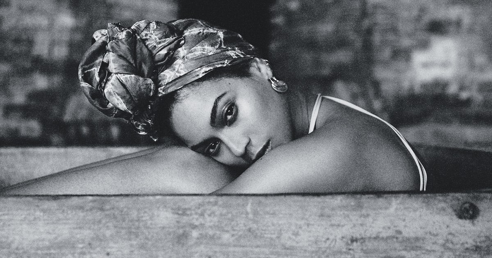

ABOUT BEYONCE

Beyoncé Giselle Knowles-Carter, born September 4, 1981, is an American singer, songwriter and actress. Born and raised in Houston, Texas, she performed in various singing and dancing competitions as a child and rose to fame in the late 1990s as lead singer of R&B girl-group Destiny's Child. Managed by her father, Mathew Knowles, the group became one of the world's best-selling girl groups of all time. Their hiatus saw the release of Beyoncé's debut album, Dangerously in Love (2003), which established her as a solo artist worldwide, earned five Grammy Awards and featured the Billboard Hot 100 number-one singles "Crazy in Love" and "Baby Boy".
Why We Chose Her
Beyonce is sassy, sexy, and as her latest ablum and video prove, a bad-ass. "Lemonade" first and foremost is an album about infedelity, however it stands as a monumental art piece, representing the world of modern black women, whom beyonce believes are "the most disrespected people in America." She calls viewers to take "lemons and make lemonade," from all the issues black women today and throughout history have faced. She covers it all; hair styles, police brutality, slavery, and her own heretige in the America south. The songs are staged in phases: addressing issues, reactions, and then forgiveness. Through this she has created a journey which showcases her own healing, while inspring women of all races to start theirs. This uprising impowers Black women to stand up to all injustices, and has forced it's own social revolution.